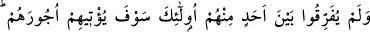

KÂFİRLER, MÜ’MİNLER
150- Allah’ı ve peygamberlerini inkâr edenler ve (inanma husûsunda) Allah ile
peygamberlerini birbirinden ayırmak isteyip «Bir kısmına îman ederiz, ama bir
kısmına inanmayız.» diyenler ve bunlar (îman ile küfür) arasında bir yol tutmak
isteyenler yok mu;
151- İşte gerçekten kâfirler bunlardır. Biz kâfirlere alçaltıcı bir azap
hazırlamışızdır.
152- Allah’a ve peygamberlerine îman eden ve onlardan hiç birini diğerlerinden
ayırmayanlara (gelince) işte Allah onlara elbette mükâfatlarını verecektir. Allah
çok bağışlayıcı ve esirgeyicidir.
Dilleriyle açıkca söylemeseler de tutum ve davranışlarıyla “Allah’ı ve
peygamberlerini inkar edenler,” Allah’a inanıp peygamberlerini inkar ederek “Allah
ile peygamberlerini birbirinden ayırmak isterler.” Lakin onlar Allah’a inandıklarını
ve peygamberleri inkar ettiklerini açıkça söylemezler. Fakat sözlerinden zorunlu olarak
bu mânâ çıkar. Nitekim onların sözleri âyette şöyle ifâde edilmektedir: “Bir kısmına
îman ederiz, ama bir kısmına inanmayız.” diyenler” Biz peygamberlerin bâzısına
inanırız, bâzısını da inkar ederiz, derler. Yahûdîlerin; “Biz Mûsâ (a.s.)’a, Tevrat’a ve
Üzeyr (a.s.)’a inanırız. Bunlardan başkasını inkâr ederiz.” demeleri gibi. Oysa bu
Allah’ı ve peygamberlerini inkar etmekten başka bir şey değildir. Allah ile peygamberi,
îman konusunda birbirinden ayırmak demektir. Halbuki Allah hiçbirini ayırmaksızın
bütün peygamberlere inanmayı emreder. Hiç bir peygamber yoktur ki, Peygamberimiz
(s.a.v)’in dîninin hak olduğunu kavmine haber vermiş olmasın. Peygamberlerden birini
inkar eden, onların hepsini inkar etmiş olur. Farkında olmadan Allah’ı da inkar eder.
“Bâzısına inanırız, bâzısını inkar ederiz” sözleriyle, “bunlar” yâni îman ile küfür
“arasında” orta “bir yol tutmak isteyenler yok mu;” Halbuki hak ile bâtıl arasında
orta bir yol kesinlikle yoktur. Çünkü hak, değişmez. Allah’a îman, ancak peygamberlerin